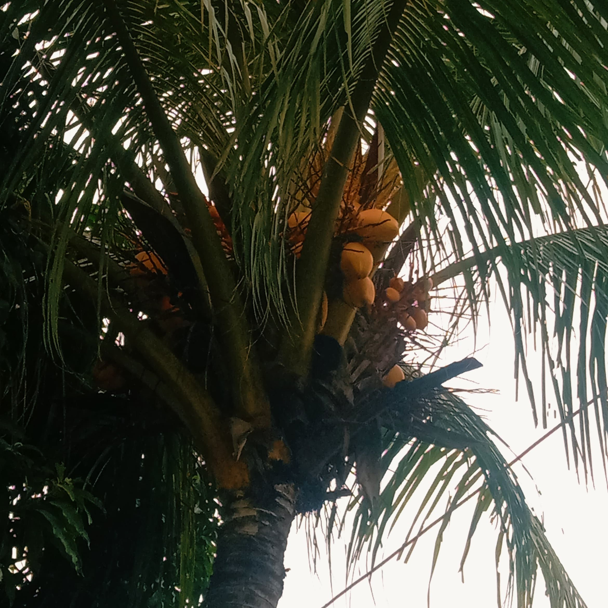

Cileungsi, 24 Mei 2024 -Keadaan alam yang menakjubkan baru saja disaksikan oleh warga perumahan Metland Cileungsi ketika salah satu pohon kelapa disana baru saja berbuah. Fenomena ini menjadi perbincangan hangat di kalangan penduduk setempat, mengingat pohon kelapa tersebut telah lama dinanti-nantikan buahnya. Pohon kelapa yang terletak di halaman depan rumah salah satu penduduk disana tersebut telah berumur sekitar lima tahun. Menurut salah satu warga disana, pohon kelapa tersebut ditanam oleh salah satu warga disana. “Saya sangat gembira ketika melihat bunga pertama kali muncul beberapa bulan yang lalu, dan sekarang melihat buahnya matang adalah kebahagiaan tersendiri bagi kami,” ungkap salah satu tetangga disana dengan penuh sukacita. Penduduk setempat juga ikut merasakan kebahagiaan yang sama. Warga setempat bilang “Pohon kelapa ini merupakan simbol harapan bagi kami semua. Kehadirannya yang berbuah kali ini memberikan semangat baru, terlebih lagi karena pohon ini berada di tengah-tengah pemukiman, menjadi pusat perhatian banyak orang.” Menurut pengamat pertanian setempat, Pak aji, proses pohon kelapa berbuah memerlukan kondisi yang cukup spesifik. “Faktor cuaca, kesuburan tanah, serta perawatan yang tepat sangat mempengaruhi proses pembuahan pohon kelapa. Pohon ini tampaknya mendapat semua kebutuhan tersebut,” jelasnya. Selain itu, Terlihat dari pohon yang subur,sehat dan menjulang tinggi nampaknya buah kelapa tersebut mendefinisikan rasa air kelapa yang manis dan mempunyai daging buah yang tebal,hal itu semakin menambah kebahagiaan warga sekitar untuk menunggu dan segera mencicipi buah kelapa tersebut. Peristiwa ini juga menjadi momen edukatif bagi anak-anak disana. Para orang tua memanfaatkan kesempatan ini untuk mengajarkan pentingnya menjaga alam dan merawat tanaman. Anak-anak tampak antusias saat diajak membersihkan pohon kelapa dan mendengar penjelasan tentang cara merawat pohon kelapa agar bisa berbuah dengan baik. Dengan berbuahnya pohon kelapa ini, diharapkan semakin banyak pohon kelapa lain di Metland Cileungsi tersebut yang di tanami dan juga mengikuti jejaknya. Peristiwa ini menunjukkan betapa pentingnya perawatan tanaman yang baik dan menciptakan lingkungan yang mendukung pertumbuhan tanaman. Metland Cileungsi kini tidak hanya dipenuhi dengan kebahagiaan karena hasil bumi yang melimpah, tetapi juga dengan harapan dan semangat baru yang tumbuh bersama pohon kelapa yang baru saja berbuah.
